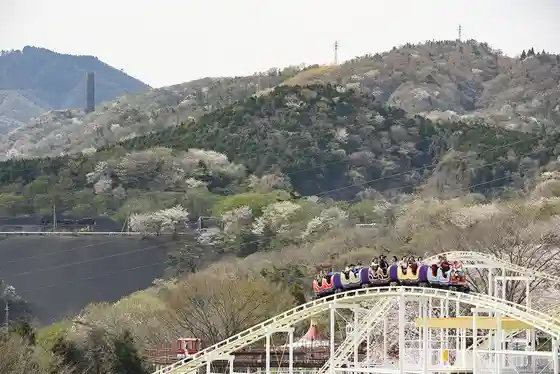
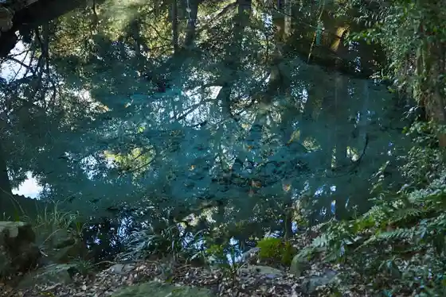
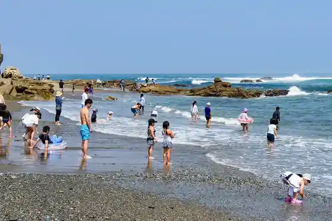
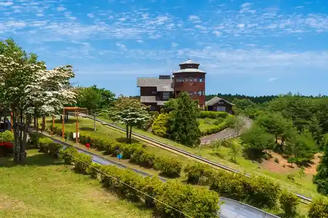

O Iwa Shrine
Hitachi, Ibaraki · 0294-21-8445 · Official / source link
Hitachi Kamine Park
Hitachi, Ibaraki · Official / source link

Izumigamori Izumi Shrine (Itoyo Village Izumigamori Park)
Hitachi, Ibaraki · 0294-52-4225 · Official / source link

Ose Beach
Hitachi, Ibaraki · 0294-24-7978 · Official / source link

Oku Hitachi Kirara Village
Hitachi, Ibaraki · 0294-24-2424 · Official / source link

Kuji Hama Beach
Hitachi, Ibaraki · 0294-24-7978 · Official / source link
U no Misaki Onsen Hitachi Uguru Rai no Yu Juo
Hitachi, Ibaraki · 0294-39-1126 · Official / source link
Yu Raku Village Hitachi Mise
Hitachi, Ibaraki · 0294-25-4126 · Official / source link
Kawara Ko Beach
Hitachi, Ibaraki · 0294-24-7978 · Official / source link
SEA BiRDS CAFE
Hitachi, Ibaraki · 0294-26-0187 · Official / source link
Ishi Hama Beach
Hitachi, Ibaraki · 0294-24-7978 · Official / source link
JA Ibaraki Hitachi Juo Bussan Center U Ki U Ki
Hitachi, Ibaraki · 0294-39-3126 · Official / source link
Hitachi Shibikku Center
Hitachi, Ibaraki · 0294-24-7711 · Official / source link
Hitachi Minami Doraibuin Kanta Soba
Hitachi, Ibaraki · 0294-28-1010 · Official / source link
Roadside Station Hitachi Osakana Center
Hitachi, Ibaraki · 0294-54-0833 · Official / source link
Mizuki Beach
Hitachi, Ibaraki · 0294-24-7978 · Official / source link
Juo Pa no Rama Park
Hitachi, Ibaraki · 0294-22-3111 · Official / source link
Kawajiri Beach
Hitachi, Ibaraki · 0294-24-7978 · Official / source link
Hitachi Yu Umi no Yado Hagi Ya
Hitachi, Ibaraki · 0294-52-2522 · Official / source link
Miso Kura Mizuki no Sho (Uchiyama Miso)
Hitachi, Ibaraki · 0294-52-3204 · Official / source link
Kuji Sanpia Hitachi
Hitachi, Ibaraki · 0294-53-8000 · Official / source link
Nichi Ko Memorial Museum
Hitachi, Ibaraki · 0294-21-8411 · Official / source link
Horizon Kamine
Hitachi, Ibaraki · 0294-22-2045 · Official / source link
Kokaigahama Green Park
Hitachi, Ibaraki · Official / source link
Hi Tatchi Rando Hareniko !
Hitachi, Ibaraki · 0294-87-6040 · Official / source link
Heiwadori
Hitachi, Ibaraki · Official / source link
Washoku Ya
Hitachi, Ibaraki · 0294-21-7700 · Official / source link
Hitachi Minami Doraibuin Kaiun Kaitenzushi Ippei Sushi
Hitachi, Ibaraki · 0294-28-1015 · Official / source link
Ko Bo Chi Park
Hitachi, Ibaraki · 0294-22-3111 · Official / source link
Ishi Hama Coast (Umiu Hokaku Ba)
Hitachi, Ibaraki · Official / source link
U no Shima Vira
Hitachi, Ibaraki · 0294-42-4404 · Official / source link
Orikasa Budo Sono
Hitachi, Ibaraki · 0294-42-4415 · Official / source link
Nakazato Reja Farm
Hitachi, Ibaraki · 0294-59-0101 · Official / source link
Higashi Namerikawa Kaihin Ryokuchi
Hitachi, Ibaraki · Official / source link
Yoshida Seion Raku Memorial Museum
Hitachi, Ibaraki · 0294-21-1125 · Official / source link
Sushi Kappo
Hitachi, Ibaraki · 0294-33-1731 · Official / source link
Hima Osamu Kan
Hitachi, Ibaraki · 0294-23-9150 · Official / source link
Hitachi Dai Entotsu
Hitachi, Ibaraki · 0294-22-3111 · Official / source link
Hitachi Ushi Yakiniku Suteki Senmonten (Niku no Resutoran Kurata)
Hitachi, Ibaraki · 0294-21-1387 · Official / source link
Kaisen Chaya Hama Zen
Hitachi, Ibaraki · 0294-54-1919 · Official / source link
Koshi Ya Hitachi Ekimae Mise
Hitachi, Ibaraki · 0294-26-8508 · Official / source link
Toyoko In Hitachi Ekimae
Hitachi, Ibaraki · 0294-23-1041 · Official / source link
Hitachi Minami Doraibuin Kaisen Shoshi Okaze
Hitachi, Ibaraki · 0294-28-1016 · Official / source link
Ogi Tsuyama Nature Park
Hitachi, Ibaraki · Official / source link
Daini Tsunesaku
Hitachi, Ibaraki · 0294-36-0234 · Official / source link
Sukegawa Yama City Tami Forest
Hitachi, Ibaraki · 0294 · Official / source link
JA Hitachi Jun Aji Man Saikan
Hitachi, Ibaraki · 0294-52-8311 · Official / source link
Hitachi Kyodo Museum
Hitachi, Ibaraki · 0294-23-3231 · Official / source link
Tonkatsu Ton
Hitachi, Ibaraki · 0294-33-3823 · Official / source link
Kikuno Kaori Shuzo
Hitachi, Ibaraki · 0294-39-4311 · Official / source link
Sushi Tenpura Unagi Sushi Matsurigoto
Hitachi, Ibaraki · 0294-25-4646 · Official / source link
Iru Bankare
Hitachi, Ibaraki · 0294-25-1114 · Official / source link
Ajidokoro Bekkan Amimoto
Hitachi, Ibaraki · 0294-24-6525 · Official / source link
Suwa Umebayashi
Hitachi, Ibaraki · 0294-22-3111 · Official / source link
JA Ibaraki Hitachi Toyora Nosambutsu Chokubai Tokoro
Hitachi, Ibaraki · 0294-42-2211 · Official / source link
Teuchi Chi Soba Hana Mizuki
Hitachi, Ibaraki · 0294-53-1883 · Official / source link
Sukegawa Kaibo Castle Ruins
Hitachi, Ibaraki · 0294-22-3111 · Official / source link
Mike Koto Tokoro Utsukushika no
Hitachi, Ibaraki · 0294-52-3019 · Official / source link
Hakusan
Hitachi, Ibaraki · 0294-36-1942 · Official / source link
JA Ibaraki Hitachi Fureai Park Hidaka
Hitachi, Ibaraki · 0294-42-4415 · Official / source link
Teuchi Chisoba Taikoku Ya
Hitachi, Ibaraki · 0294-39-3456 · Official / source link
Fuji Farm
Hitachi, Ibaraki · 080-2109-1515 · Official / source link
Morishima Shuzo
Hitachi, Ibaraki · 0294-43-5334 · Official / source link
Pateisurii Mashieri
Hitachi, Ibaraki · 0294-85-7555 · Official / source link
MIDORITO SAUNA (Midoritosauna)
Hitachi, Ibaraki · 050-7109-5623 · Official / source link
Resutoran Sokai
Hitachi, Ibaraki · 0294-22-0188 · Official / source link
Satokawa Hatsudensho
Hitachi, Ibaraki · 0294-24-5311 · Official / source link
Wayo Shoku Na
Hitachi, Ibaraki · 0294-23-2402 · Official / source link
Yu Shoku Sake Bo Sakae Raku
Hitachi, Ibaraki · 0294-33-0115 · Official / source link
Man Taira
Hitachi, Ibaraki · 0294-22-1401 · Official / source link
Azuma Kan
Hitachi, Ibaraki · 0294-22-0357 · Official / source link
Hitachi Kozan Ato no Yamazakura
Hitachi, Ibaraki · Official / source link